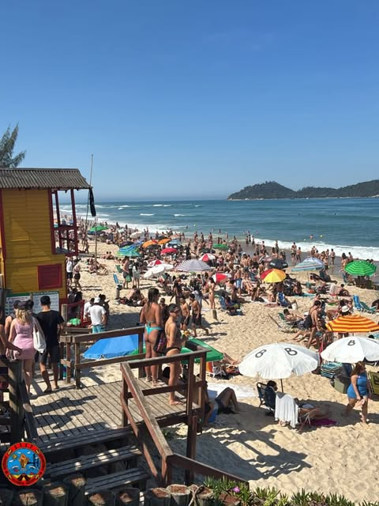
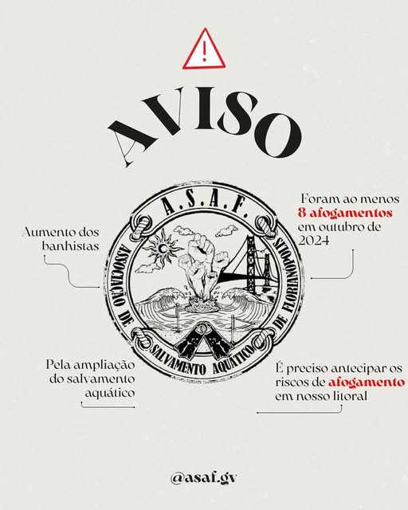

Vidas Não Têm Temporada.
Quem Salva Vidas Merece Valorização!
Nascida nas praias de Florianópolis, a A.S.A.F. une Guarda-Vidas Civis (GVCs), Bombeiros Militares e banhistas de toda Santa Catarina pela valorização de quem protege o nosso litoral e pela presença de guarda-vidas o ano inteiro.
Repare nas duas bandeiras vermelhas na base da nossa logo: na rotina do Guarda-Vidas, a Bandeira Vermelha fincada na beira da praia demarca o ponto exato da maré de retorno (corrente de retorno) — responsável por mais de 85% dos afogamentos. Sem GVC na praia o ano inteiro para ler o mar e posicionar a bandeira vermelha, o perigo fica invisível para quem entra na água.
Fortaleça os Guarda-Vidas em Santa Catarina
Sua assinatura apoia a revisão da Lei Estadual nº 13.880/2006, melhores condições de trabalho para os GVCs e cobertura de salvamento nas praias durante todo o ano.
- 1 Reajuste Digno das diárias e remuneração;
- 2 Redução de Carga Horária sem redução salarial;
- 3 Guarda-Vidas o Ano Inteiro nas praias;
- 4 Contratação Digna (fim do "voluntariado" precário);
- 5 Plano de Carreira para os guarda-vidas.
Guarda-vidas posicionando a Bandeira Vermelha para demarcar a corrente de retorno em Florianópolis.
A Bandeira Vermelha e o Perigo Invisível da Maré de Retorno
Para quem olha da areia, o local onde as ondas não estão quebrando parece uma "piscina calma". Na verdade, é ali que atua a maré de retorno (corrente de retorno): uma vala profunda que puxa rapidamente o banhista para o mar aberto.
O GVC lê a formação dos bancos de areia a cada mudança de maré, finca a Bandeira Vermelha exatamente em frente à corrente de retorno e orienta preventivamente os banhistas com o apito antes que o afogamento aconteça.
Quando os postos são fechados no outono, inverno e primavera, ninguém demarca as correntes de retorno com a bandeira vermelha. Famílias, turistas e surfistas entram no canal de retorno sem nenhum aviso.
Acompanhe as Ações da A.S.A.F. em Santa Catarina
Postagens em Destaque no Instagram @asaf.gv
Abrir perfil @asaf.gv ↗Com o calor, as praias voltam a encher, mas a maioria dos postos segue desativada.

Instagram ↗Praia cheia de banhistas em dia de sol fora da temporada e posto de salvamento desativado.

Instagram ↗Pela ampliação imediata do período e do efetivo de salvamento aquático em todo o nosso litoral.
"Em luta por Guarda-Vidas Permanentes": a união entre surfistas, moradores e guarda-vidas.
As 5 Pautas Oficiais da A.S.A.F.
Reajuste Digno Já
Atualização real dos valores pagos aos Guarda-Vidas Civis em Santa Catarina, hoje corroídos pela inflação e incompatíveis com o custo de vida no litoral e o risco da atividade.
Redução de Carga Horária sem Redução de Salário
Escalas extenuantes de 9h a 12h diárias sob insolação severa geram exaustão física extrema. Defendemos turnos humanizados de 6h sem nenhuma perda salarial/diária.
Guarda-Vidas o Ano Inteiro
Florianópolis e o litoral de SC recebem surfistas, moradores e turistas de janeiro a janeiro. Manter postos ativos garante sinalização das correntes de retorno e resgate rápido o ano todo.
Contratação Digna
Superação do modelo precário de "voluntariado" (Lei Estadual nº 13.880/2006) que nega FGTS, 13º salário, férias e amparo previdenciário adequado a quem arrisca a vida no mar.
Plano de Carreira
Reconhecimento das temporadas trabalhadas, recertificações e experiência acumulada pelos guarda-vidas no litoral catarinense.
Portal Integrado asafgv.com
Banhistas podem tirar dúvidas sobre correntes de retorno e indicar praias sem cobertura; GVCs contam com mural interno e agenda da associação.
Situação dos Postos e Sinalização nas Praias
Últimas Assinaturas em Santa Catarina
Moradores, banhistas, surfistas, guarda-vidas civis e bombeiros militares de todas as regiões de Santa Catarina juntos pelas 5 pautas da A.S.A.F.